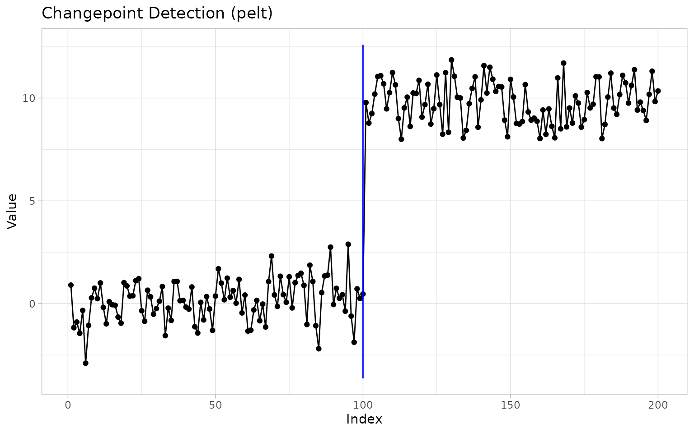
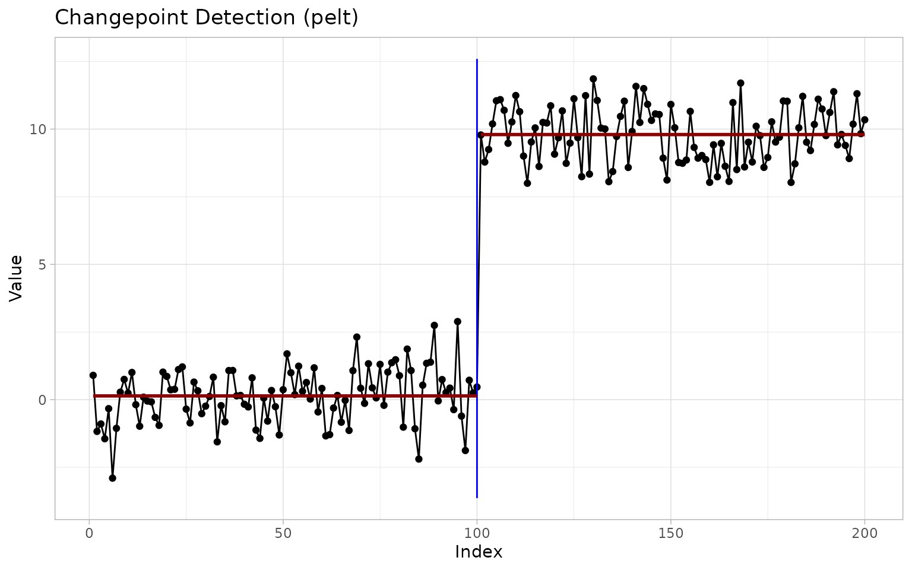
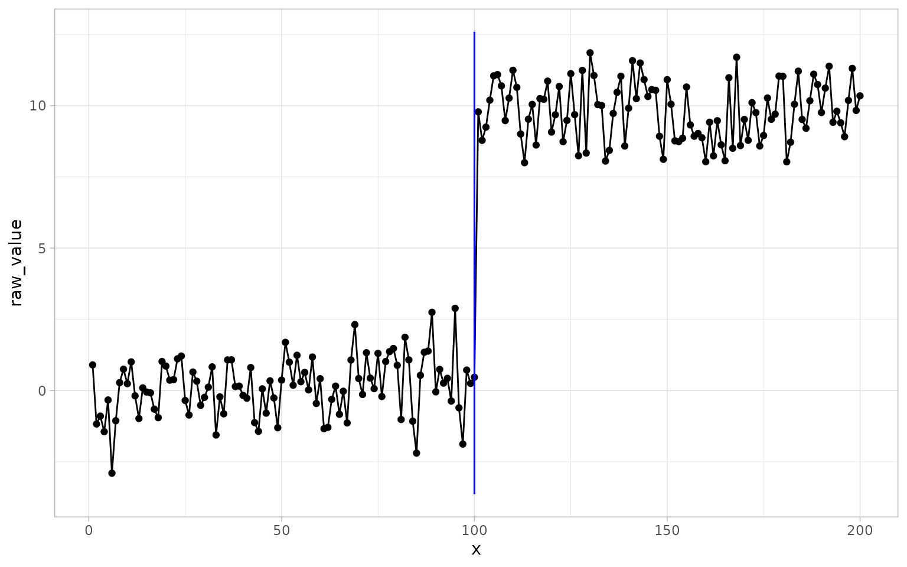
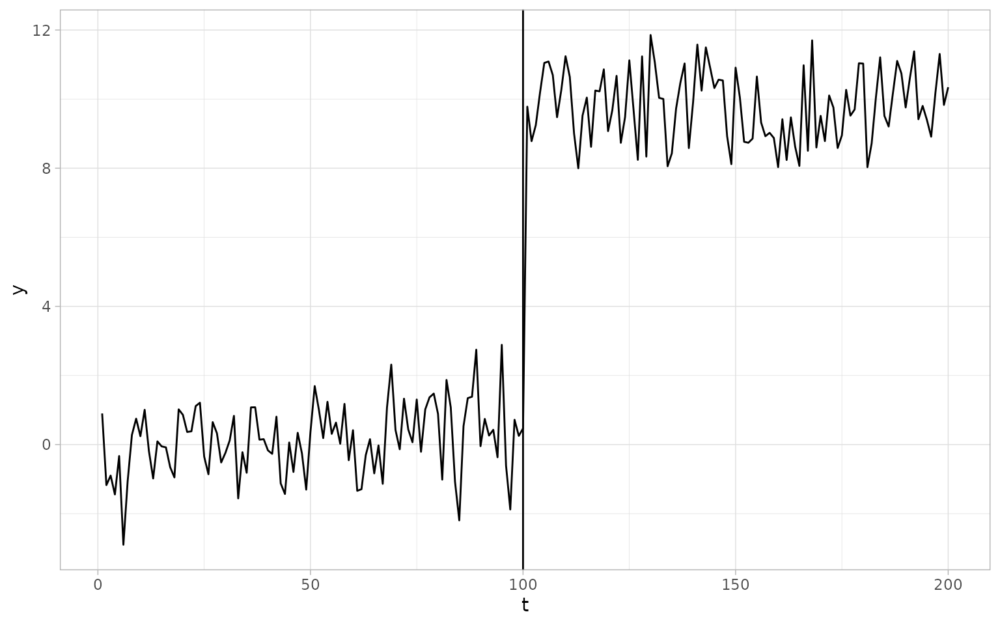
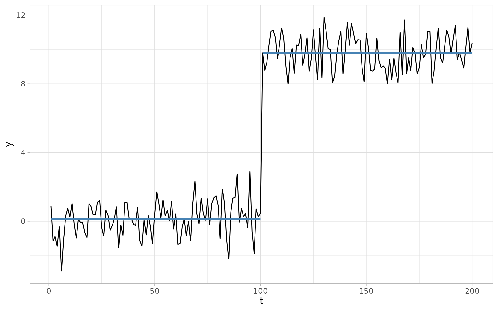
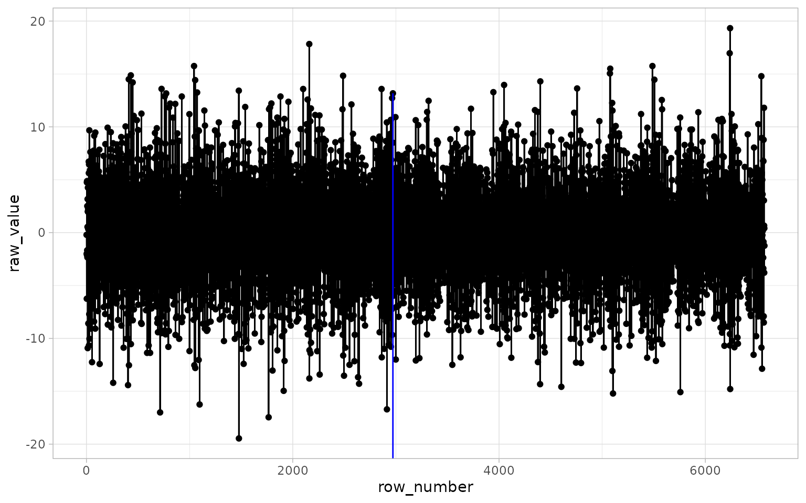
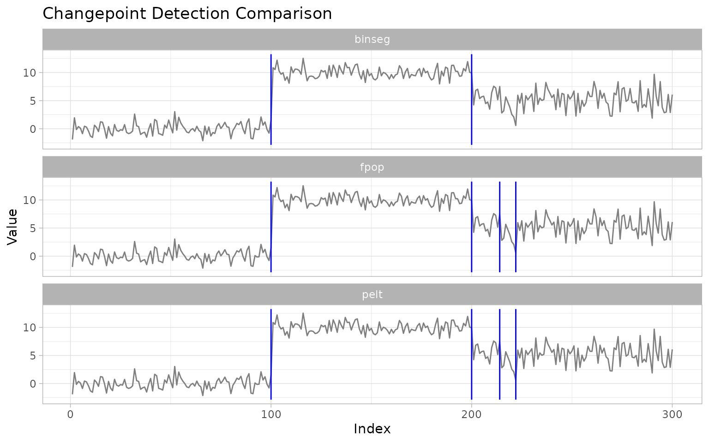
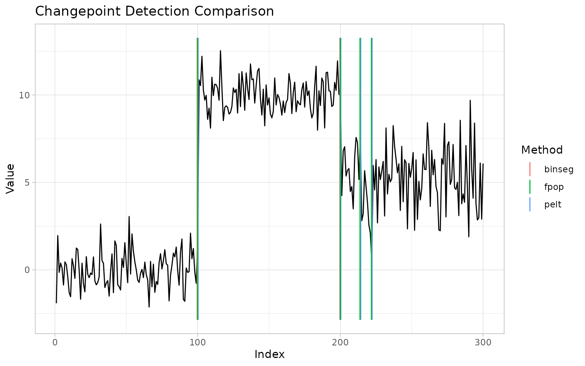
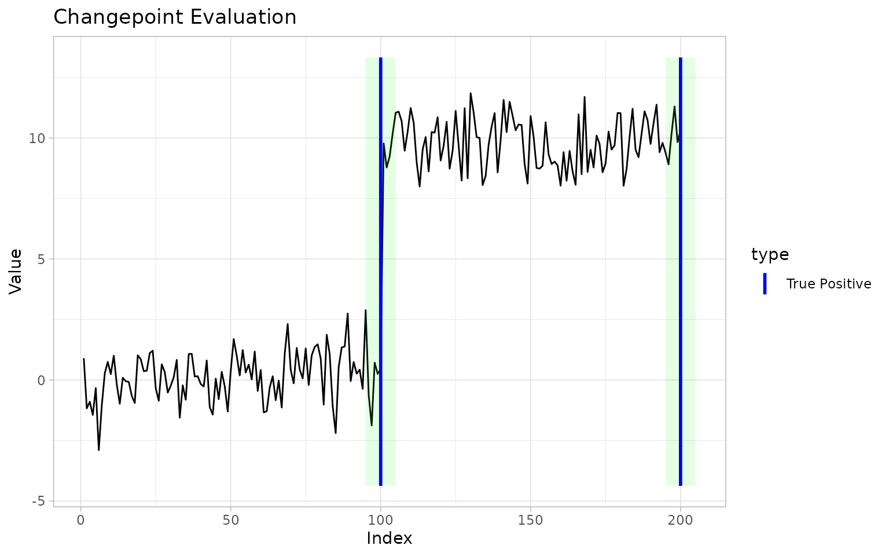
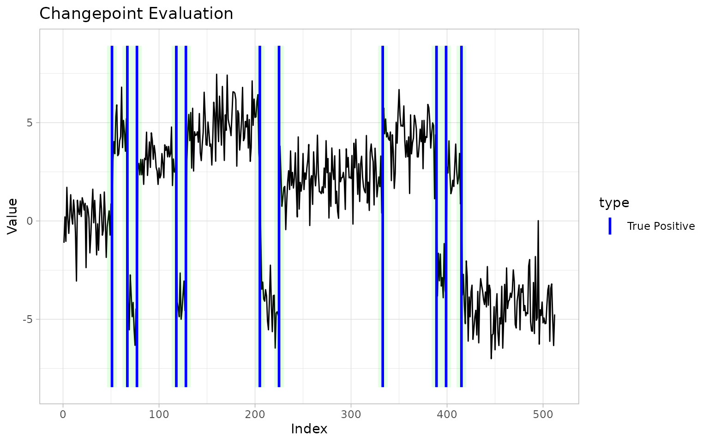

ggchangepoint: A Unified Tidy Interface for Changepoint Analysis in R
Youzhi
Yu
University of Chicago
2026-06-25
Source:vignettes/introduction.Rmd
introduction.RmdAbstract
ggchangepoint is an R package that provides a
unified, tidy interface to changepoint detection across multiple
algorithmic backends. It introduces the ggcpt S3 result
class with broom-style methods (tidy(),
glance(), augment()), a central
cpt_detect() dispatcher supporting over a dozen detection
algorithms, native ggplot2 visualization via
autoplot() and specialised geoms, method comparison and
accuracy evaluation modules, and a data simulation framework with
canonical test signals. By harmonising the disparate APIs of existing R
changepoint packages behind a single convention, ggchangepoint lowers
the barrier to exploratory changepoint analysis and reproducible method
comparison.
Introduction
Changepoint detection—the problem of identifying points in a sequence at which the underlying statistical properties change—is a fundamental task in time series analysis (Truong et al. 2020; Aminikhanghahi and Cook 2017). It has applications across virtually every domain that involves sequential data, including genomics (Picard et al. 2005), finance (Athey et al. 2022), climate science (Haslett and Raftery 1989), and signal processing (Lavielle 2005).
The R ecosystem offers a rich set of changepoint packages, each implementing one or more detection algorithms with its own conventions for input, output, and parameterisation. The changepoint package (Killick and Eckley 2014) provides PELT (Killick et al. 2012), Binary Segmentation (Scott and Knott 1974; Vostrikova 1981), Segmented Neighbourhood, and AMOC. The wbs (Fryzlewicz 2014) and breakfast packages implement Wild Binary Segmentation and its variants, while not (Baranowski et al. 2019), mosum (Eichinger and Kirch 2018), fpop (Maidstone et al. 2017), IDetect (Anastasiou and Fryzlewicz 2022), and others offer further specialised algorithms. On the nonparametric side, changepoint.np (Haynes et al. 2017) and ecp (James and Matteson 2014; Matteson and James 2014) handle distributional changes.
While this diversity is a strength of the R community, it creates
practical difficulties for the analyst. Each package uses a different
result class, different naming conventions for parameters, different
plot methods, and different changepoint indexing conventions. Comparing
the output of several detectors on the same data—a standard practice for
robust analysis—requires the user to write manual conversion code.
Furthermore, none of the existing packages natively produce
ggplot2 (Wickham 2016)
graphics or support the broom (Robinson 2017) convention for tidy data
extraction.
ggchangepoint addresses these problems by providing a single, consistent interface that wraps the most widely used detection packages. Its design goals are:
-
Uniformity: a single
ggcptresult class regardless of the underlying detection engine, withbroom-style methods for tidy data access. -
Discoverability: a central
cpt_detect()dispatcher whose documentation lists all supported methods and their capabilities. -
Visualisation: first-class
ggplot2integration throughautoplot()and specialised geoms. - Comparison and evaluation: built-in tools for running multiple detectors, tabulating their results, computing accuracy metrics, and visualising discrepancies.
- Reproducibility: a simulation framework that generates data with known changepoints, enabling rigorous benchmarking.
The ggcpt Result Class
The ggcpt class is an S3 class that stores the complete
output of a changepoint detection in a structured format. Every
detection function in ggchangepoint—whether called through
cpt_detect() or directly—returns a ggcpt
object, ensuring a uniform interface for downstream processing.
library(ggchangepoint)
library(ggplot2)
library(generics)
theme_set(theme_light())
set.seed(2022)
x <- c(rnorm(100, 0, 1), rnorm(100, 10, 1))
res <- cpt_detect(x, method = "pelt", change_in = "mean")
class(res)
#> [1] "ggcpt"A ggcpt object is a named list with the following
components:
-
changepoints: a tibble of detected changepoint locations (cp) and their corresponding data values (cp_value). -
segments: a tibble describing the fitted segments (segment ID, start, end, length, and the segment-level parameter estimate). -
data: the original data series as a tidy tibble ofindexandvalue. -
metadata fields:
method,change_in,penalty,fit(the raw upstream object),call, andcp_convention.
print(res)
#> ggcpt (changepoint detection result)
#> Method: pelt
#> Change in: mean
#> Changepoints found: 1
#> CP convention: left
#> Penalty: MBIC = NA
#> Series length: 200
#>
#> Changepoints:
#> # A tibble: 1 × 2
#> cp cp_value
#> <int> <dbl>
#> 1 100 0.467The cp_convention component records whether changepoint
indices follow the left-segment convention—the last observation
before the change, used by the changepoint package—or
the right-segment convention. All ggchangepoint methods report
locations under the left-segment convention, with results from packages
that use the alternative convention (e.g., ecp)
normalised automatically so that methods can be compared on a common
footing.
res$cp_convention
#> [1] "left"Broom-Style Methods
Following the broom convention (Robinson 2017) for standardised data access,
ggcpt objects support tidy(),
glance(), and augment().
tidy() returns the changepoint
locations as a tibble, one row per changepoint:
generics::tidy(res)
#> # A tibble: 1 × 2
#> cp cp_value
#> <int> <dbl>
#> 1 100 0.467glance() returns a one-row summary with
the series length, number of detected changepoints, method, change type,
and penalty information:
generics::glance(res)
#> # A tibble: 1 × 9
#> n n_changepoints method change_in penalty_type penalty_value cp_convention
#> <int> <int> <chr> <chr> <chr> <dbl> <chr>
#> 1 200 1 pelt mean MBIC NA left
#> # ℹ 2 more variables: total_cost <dbl>, runtime <dbl>augment() returns the original data
augmented with segment identifiers, fitted segment-level parameter
estimates, residuals, and a logical flag indicating changepoint
positions:
generics::augment(res)
#> # A tibble: 200 × 6
#> index value seg_id .fitted .resid is_changepoint
#> <int> <dbl> <int> <dbl> <dbl> <lgl>
#> 1 1 0.900 1 0.139 0.761 FALSE
#> 2 2 -1.17 1 0.139 -1.31 FALSE
#> 3 3 -0.897 1 0.139 -1.04 FALSE
#> 4 4 -1.44 1 0.139 -1.58 FALSE
#> 5 5 -0.331 1 0.139 -0.470 FALSE
#> 6 6 -2.90 1 0.139 -3.04 FALSE
#> 7 7 -1.06 1 0.139 -1.20 FALSE
#> 8 8 0.278 1 0.139 0.139 FALSE
#> 9 9 0.749 1 0.139 0.611 FALSE
#> 10 10 0.242 1 0.139 0.103 FALSE
#> # ℹ 190 more rowsThese methods make it straightforward to pipe ggchangepoint results into further analysis or custom visualisation.
Unified Detection Dispatcher
The cpt_detect() function serves as the primary entry
point for changepoint detection. It accepts a data series, a method
name, a change type, and optional penalty parameters, and dispatches to
the appropriate backend wrapper:
cpt_detect(x, method = "pelt", change_in = "mean")
#> ggcpt (changepoint detection result)
#> Method: pelt
#> Change in: mean
#> Changepoints found: 1
#> CP convention: left
#> Penalty: MBIC = NA
#> Series length: 200
#>
#> Changepoints:
#> # A tibble: 1 × 2
#> cp cp_value
#> <int> <dbl>
#> 1 100 0.467
cpt_detect(x, method = "fpop", change_in = "mean")
#> ggcpt (changepoint detection result)
#> Method: fpop
#> Change in: mean
#> Changepoints found: 1
#> CP convention: left
#> Penalty: Manual = 10.5966347330961
#> Series length: 200
#>
#> Changepoints:
#> # A tibble: 1 × 2
#> cp cp_value
#> <int> <dbl>
#> 1 100 0.467The following detection methods are currently supported:
| Method | Package(s) | Change types |
|---|---|---|
pelt |
changepoint | mean, var, meanvar |
binseg |
changepoint | mean, var, meanvar |
segneigh |
changepoint | mean, var, meanvar |
amoc |
changepoint | mean, var, meanvar |
fpop |
fpop | mean |
wbs |
wbs | mean |
wbs2 |
breakfast | mean |
not |
not | mean, var, meanvar |
mosum |
mosum | mean, var |
idetect |
IDetect | mean |
tguh |
breakfast | mean |
np |
changepoint.np | distribution |
ecp |
ecp | distribution (multivariate) |
Penalty Specification
For methods that support it (PELT, Binary Segmentation, Segmented
Neighbourhood, AMOC, FPOP), the penalty parameter can be controlled via
cpt_penalty() or the penalty argument.
Penalties can be information criteria—"BIC" (Yao 1988), "AIC"—or user-specified
numeric values:
cpt_detect(x, method = "pelt", change_in = "mean", penalty = "BIC")
#> ggcpt (changepoint detection result)
#> Method: pelt
#> Change in: mean
#> Changepoints found: 1
#> CP convention: left
#> Penalty: BIC = NA
#> Series length: 200
#>
#> Changepoints:
#> # A tibble: 1 × 2
#> cp cp_value
#> <int> <dbl>
#> 1 100 0.467
cpt_detect(x, method = "fpop", change_in = "mean", penalty = 2 * log(200))
#> ggcpt (changepoint detection result)
#> Method: fpop
#> Change in: mean
#> Changepoints found: 1
#> CP convention: left
#> Penalty: Manual = 10.5966347330961
#> Series length: 200
#>
#> Changepoints:
#> # A tibble: 1 × 2
#> cp cp_value
#> <int> <dbl>
#> 1 100 0.467Visualisation
ggchangepoint provides several layers of ggplot2
integration, from one-function plotting to fully customisable geoms.
The autoplot() Method
The recommended way to visualise a ggcpt result is
through autoplot(), which produces a ggplot2
object showing the data series with changepoint locations marked by
vertical lines:
ggplot2::autoplot(res)
Alternating shaded segments help delineate regimes:
ggplot2::autoplot(res, show_segments = TRUE)
The Original Plotting Functions
The ggcptplot() and ggecpplot() functions
from version 0.1.0 are retained for backward compatibility:
ggcptplot(x)
ggecpplot(x, min_size = 10)ggplot2 Geoms
For users who wish to build custom visualisations, ggchangepoint provides four new geoms and stats.
geom_changepoint() adds vertical lines
at changepoint positions:
ggplot(data.frame(t = seq_along(x), y = x), aes(t, y)) +
geom_line() +
geom_changepoint(data = generics::tidy(res), aes(xintercept = cp))
geom_cpt_segment() draws the fitted
segment-level means between changepoints:
seg <- res$segments
ggplot(data.frame(t = seq_along(x), y = x), aes(t, y)) +
geom_line() +
geom_cpt_segment(data = seg,
aes(x = start, xend = end, y = param_estimate,
yend = param_estimate),
colour = "steelblue", linewidth = 1.2)
stat_changepoint() runs
cpt_detect() inline within the ggplot pipeline:
ggplot(data.frame(t = seq_along(x), y = x), aes(t, y)) +
geom_line() +
stat_changepoint(method = "pelt", change_in = "mean")
geom_cpt_ci() adds confidence intervals
around segment estimates.
Method Comparison
Robust changepoint analysis typically involves running multiple detectors on the same data and comparing their outputs. ggchangepoint provides dedicated comparison functions for this purpose.
Side-by-Side and Overlay Plots
ggcpt_compare() runs several methods and arranges the
results either as facetted panels (one per method) or as an overlay with
colour-coded changepoint markers:
x3 <- c(rnorm(100, 0, 1), rnorm(100, 10, 1), rnorm(100, 5, 2))
cmp_methods <- if (has_fpop) c("pelt", "binseg", "fpop") else c("pelt", "binseg", "amoc")
ggcpt_compare(x3, methods = cmp_methods, layout = "facet")
ggcpt_compare(x3, methods = cmp_methods, layout = "overlay")
For a numeric summary, ggcpt_compare_table() returns a
tidy tibble of all detected changepoints across methods:
ggcpt_compare_table(x3, methods = cmp_methods)
#> # A tibble: 10 × 3
#> method cp cp_value
#> <chr> <dbl> <dbl>
#> 1 pelt 100 1.47
#> 2 pelt 200 9.94
#> 3 pelt 214 7.52
#> 4 pelt 222 0.581
#> 5 binseg 100 1.47
#> 6 binseg 200 9.94
#> 7 fpop 100 1.47
#> 8 fpop 200 9.94
#> 9 fpop 214 7.52
#> 10 fpop 222 0.581Parallel Execution
When many methods are being compared, ggcpt_compare()
respects the future::plan() parallelisation strategy if the
future and future.apply packages are
available. Detection is fanned out over the requested methods; supplying
a seed makes the parallel run reproducible via
parallel-safe L’Ecuyer-CMRG streams:
future::plan(future::multisession, workers = 2)
ggcpt_compare(x, methods = c("pelt", "binseg", "fpop", "wbs", "not"),
seed = 1)Accuracy Evaluation
When ground-truth changepoint locations are known—either from
synthetic data or from a labelled data set—ggchangepoint provides a
comprehensive suite of accuracy metrics through
cpt_metrics():
- Precision and recall based on a margin of tolerance (default 5).
- F1 score, the harmonic mean of precision and recall.
- Covering metric, the length-weighted average Jaccard overlap between the true and predicted segmentations (van den Burg and Williams 2020).
- Hausdorff distance between the sets of predicted and true changepoint locations.
- Adjusted Rand index, measuring agreement between the induced segment labellings (Hariz et al. 2007).
- Annotation error, the absolute difference between the predicted and true number of changepoints (van den Burg and Williams 2020).
- Mean absolute error (MAE) and root mean squared error (RMSE) of changepoint locations.
cpt_metrics(pred = c(100, 200), truth = c(100, 200), n = 300)
#> # A tibble: 1 × 12
#> n n_pred n_truth precision recall f1 covering hausdorff rand_index
#> <int> <int> <int> <dbl> <dbl> <dbl> <dbl> <dbl> <dbl>
#> 1 300 2 2 1 1 1 1 0 1
#> # ℹ 3 more variables: annotation_error <int>, mae_matched <dbl>,
#> # rmse_matched <dbl>With a tolerance margin, detections within the margin are considered correct:
cpt_metrics(pred = c(105, 205), truth = c(100, 200), n = 300, margin = 10)
#> # A tibble: 1 × 12
#> n n_pred n_truth precision recall f1 covering hausdorff rand_index
#> <int> <int> <int> <dbl> <dbl> <dbl> <dbl> <dbl> <dbl>
#> 1 300 2 2 1 1 1 0.936 5 0.903
#> # ℹ 3 more variables: annotation_error <int>, mae_matched <dbl>,
#> # rmse_matched <dbl>For scenarios with multiple ground-truth annotations,
cpt_metrics_annotated() computes metrics against each
annotator and averages:
cpt_metrics_annotated(pred = c(100, 200),
annotations = list(c(100, 200), c(105, 198)),
n = 300)
#> # A tibble: 1 × 7
#> n n_annotators n_pred precision recall f1 covering
#> <dbl> <int> <int> <dbl> <dbl> <dbl> <dbl>
#> 1 300 2 2 1 1 1 0.977The ggcpt_eval() function provides a visual evaluation
plot, showing true and predicted changepoints colour-coded by match
status:
ggcpt_eval(pred = c(100, 200), truth = c(100, 200), data_vec = x)
Data Simulation
Reproducible synthetic data is essential for benchmarking detection
algorithms. ggchangepoint provides cpt_simulate() (and its
shorthand rcpt()) for generating time series with known
changepoint locations across a range of scenarios.
Flexible Simulation
The simulator supports changes in mean, variance, both, or slope, with four noise models—Gaussian, Student-t, AR(1), and random walk:
seg_params <- list(
list(mean = 0, sd = 1),
list(mean = 10, sd = 1),
list(mean = 5, sd = 0.5),
list(mean = -2, sd = 1)
)
dat <- cpt_simulate(200, changepoints = c(50, 100, 150),
change_in = "meanvar",
params = seg_params)The true changepoint locations are stored as an attribute:
attr(dat, "true_changepoints")
#> [1] 50 100 150Canonical Test Signals
The package also includes five canonical test signals adapted from the wavelet and changepoint literature (Donoho and Johnstone 1994):
blocks <- signal_blocks(512)
fms <- signal_fms(512)
mix <- signal_mix(512)
teeth <- signal_teeth(512)
stairs <- signal_stairs(512)Each signal has known changepoint locations and is suitable for benchmarking detection accuracy across different signal structures.
Case Study: Comparative Evaluation on a Block Signal
We illustrate a complete workflow—simulation, detection, comparison, and evaluation—using the Blocks test signal with added Gaussian noise:
set.seed(1)
sig <- signal_blocks(512)
truth <- attr(sig, "true_changepoints")
x_noisy <- sig$value + rnorm(512, 0, 0.5)Detect changepoints with every method available in this build, score each against the known truth with a tolerance margin of 5, and collect the results into a single table:
methods_cs <- c("pelt", "binseg", "amoc")
if (has_fpop) methods_cs <- c(methods_cs, "fpop")
if (has_wbs) methods_cs <- c(methods_cs, "wbs")
if (has_not) methods_cs <- c(methods_cs, "not")
metrics <- do.call(rbind, lapply(methods_cs, function(m) {
res <- cpt_detect(x_noisy, method = m, change_in = "mean")
pred <- generics::tidy(res)$cp
data.frame(method = m, cpt_metrics(pred, truth, n = 512, margin = 5))
}))
metrics[, c("method", "n_pred", "precision", "recall", "f1", "covering")]
#> method n_pred precision recall f1 covering
#> 1 pelt 11 1 1.00000000 1.0000000 1.0000000
#> 2 binseg 5 1 0.45454545 0.6250000 0.6019535
#> 3 amoc 1 1 0.09090909 0.1666667 0.3128671
#> 4 fpop 11 1 1.00000000 1.0000000 1.0000000
#> 5 wbs 11 1 1.00000000 1.0000000 1.0000000
#> 6 not 11 1 1.00000000 1.0000000 1.0000000Visual evaluation of the PELT result, with the tolerance windows shaded and predictions coloured by match status:
pred_pelt <- generics::tidy(cpt_detect(x_noisy, method = "pelt"))$cp
ggcpt_eval(pred = pred_pelt, truth = truth, data_vec = x_noisy)
Summary and Future Work
ggchangepoint provides a unified, tidy interface to the diverse
changepoint detection ecosystem in R. By standardising on a single
result class, adopting broom conventions, and integrating
natively with ggplot2, the package reduces the friction of
exploratory changepoint analysis and facilitates reproducible method
comparison.
Planned directions for future development include:
- Additional wrapper coverage: integration of further detection packages such as strucchange, segmented, and bcp.
- Online detection: support for streaming and sequential changepoint detection.
- Model selection helpers: visual tools for penalty selection, including elbow plots and cross-validated loss curves.
- Multivariate and high-dimensional methods: improved handling of multivariate changepoint detection, leveraging ecp’s existing multi-dimensional support.
- Interactive visualisation: integration with interactive plotting frameworks for exploratory data analysis.
Contributions and bug reports are welcome at the package’s GitHub repository (https://github.com/PursuitOfDataScience/ggchangepoint).